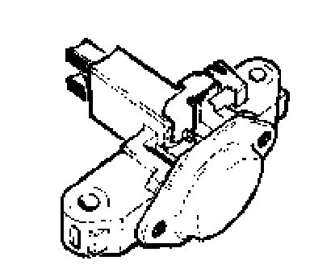

Operation CHARM
: Car repair manuals for everyone.
Home
>>
Volkswagen
>>
1997
>>
GTI (1H1) V6-2.8L (AAA)
>>
Repair and Diagnosis
>>
Starting and Charging
>>
Charging System
>>
Alternator
>>
Alternator Brush
>>
Testing and Inspection
Alternator Brush: Testing and Inspection
Generator (GEN), servicing
Generator carbon brushes, checking

Lengths of carbon brushes:
- New:
12 mm (0.47 in)
- In-service:
minimum 5 mm (0.20 in) (wear limit)
- Tolerance:
+ 1 mm (+0.04 in)